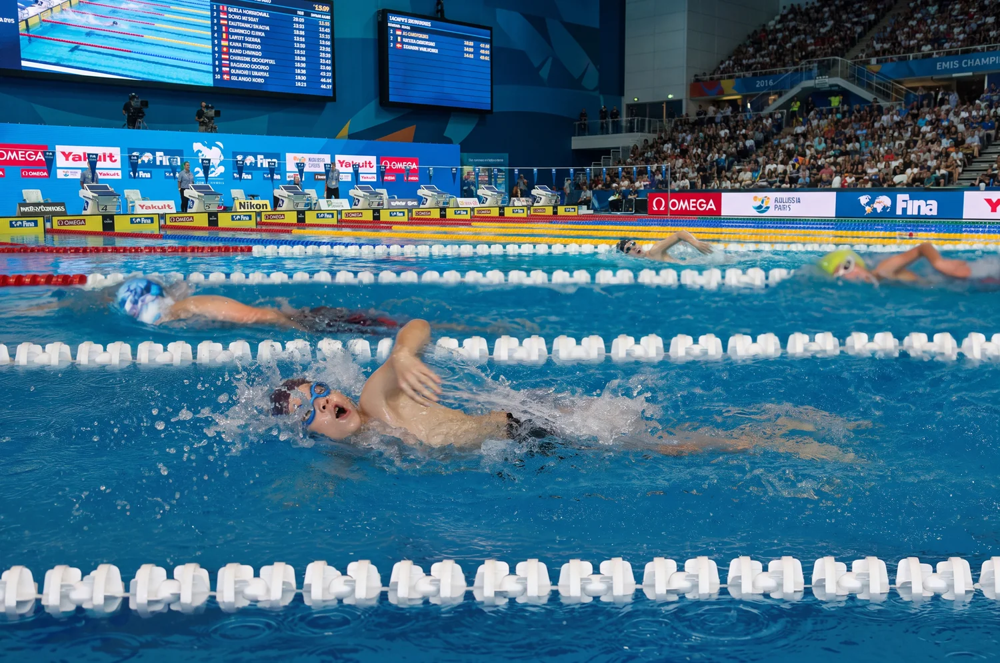

5-е место
Из 13 · 50 м кролем

Сократил время с первого заплыва
Из 13 · 50 м кролем
Кадры из видеоархива
| Дата | Дисциплина | Время | Соревнование | Статус и источник | Действия |
|---|
Сохраните черновик, затем загрузите starts.json в репозиторий. После публикации изменения увидит Лука.
Лука проплыл дистанцию на 19,86 с быстрее, чем на курсовке год назад. На этом старте до 4-го места не хватило всего 0,58 с.
Первенство ко Дню Невинномысска, мальчики 9 лет. Итоговый протокол, стр. 1, дисциплина 2. Раннее время 1:02,03 — из листа курсовки от 04.10.2025.
8:59,19 → 8:30,9 за три недели. Это 16 длин бассейна. Лука, ты уже знаешь, каково проплыть такую дистанцию от старта до финиша!
Лист курсовки от 13.02.2026 и итоговый протокол «День стайера» от 06.03.2026, стр. 6–7, дисциплина 3. Бассейн 25 м на обоих стартах.
В декабре было 1:04,60. На следующем подтверждённом старте Лука проплыл за 59,71 и улучшил время на 4,89 с.
GoSwim, первенство «Героям Отечества» и итоговый протокол от 29.01.2026, стр. 1, дисциплина 2. Бассейн 25 м.